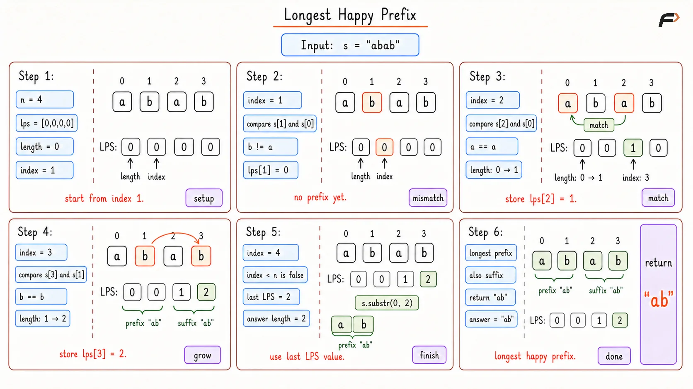

Longest Happy Prefix Using the KMP Prefix Function
Given a string s, return the longest non-empty prefix of s that is also a suffix of s. The prefix and suffix are allowed to overlap, but the whole string cannot be used as the answer. If no such prefix exists, return an empty string.
Example 1
Input: s = "level"
Output: "l"
Explanation: The prefix "l" and the suffix "l" are the same. No longer valid prefix is also a suffix.
Example 2
Input: s = "ababab"
Output: "abab"
Explanation: The prefix "abab" and the suffix "abab" are the same. They overlap inside the string, and that is allowed.
Approach
The phrase “longest prefix which is also a suffix” is exactly what the LPS array from the KMP algorithm stores. For every index i, lps[i] tells the length of the longest proper prefix of s[0...i] that is also a suffix of s[0...i].
So for the full string, the answer length is stored at the last index of the LPS array.
For example, in "ababab":
The longest prefix that is also a suffix is
"abab".Its length is
4.So the last value in the LPS array becomes
4.
The clever part is how mismatches are handled. If characters do not match, there is no need to restart from zero immediately. The LPS array already knows the next smaller prefix length that might still work.
Algorithm
Create an array
lpsof sizen, filled with0. Each position will store the best prefix-suffix length for the substring ending at that position.Keep a variable
lengthto store the current matching prefix length. This is needed because the next character will be compared withs[length].Start checking from index
1, because a single character cannot have a proper prefix that is also a suffix.If
s[index]matchess[length], increaselengthand store it inlps[index]. This means the current substring has found a longer matching prefix-suffix.If the characters do not match and
lengthis not zero, movelengthback tolps[length - 1]. This keeps the best smaller prefix that may still match, instead of starting over.If the characters do not match and
lengthis zero, move to the next index because no prefix can be extended at this point.After the LPS array is built,
lps[n - 1]gives the length of the longest happy prefix. Return the firstlps[n - 1]characters of the string.
Dry Run

Longest Happy Prefix Dry Run
Solution
#include <bits/stdc++.h>
using namespace std;
class Solution {
public:
/*
Finds the longest proper prefix of the string
that is also a suffix using the KMP LPS array.
*/
string longestPrefix(string s) {
int n = s.size();
/*
The LPS array stores the longest prefix-suffix
length for every substring ending at each index.
*/
vector<int> lps(n, 0);
/*
This stores the length of the current prefix
that is matching with a suffix.
*/
int length = 0;
/*
The first character cannot have a proper prefix,
so checking starts from index 1.
*/
int index = 1;
while (index < n) {
/*
If both characters match, the current
prefix-suffix match becomes longer by one.
*/
if (s[index] == s[length]) {
length++;
lps[index] = length;
index++;
}
/*
If there is a mismatch after some matches,
try the next best smaller prefix length.
*/
else if (length > 0) {
length = lps[length - 1];
}
/*
If no prefix is currently matching, this index
cannot extend any happy prefix.
*/
else {
lps[index] = 0;
index++;
}
}
/*
The last LPS value gives the answer length
for the whole string.
*/
return s.substr(0, lps[n - 1]);
}
};
/* Driver code starts */
int main() {
Solution sol;
string s = "ababab";
cout << sol.longestPrefix(s) << endl;
return 0;
}Complexity Analysis
Time Complexity: O(n), because each character is processed in a way that moves the index forward or moves the matched length backward using already computed LPS values.
Space Complexity: O(n), because the LPS array stores one value for each character.
Interview follow-up Questions
Yes. In "ababab", the answer "abab" overlaps inside the string, and it is still valid.